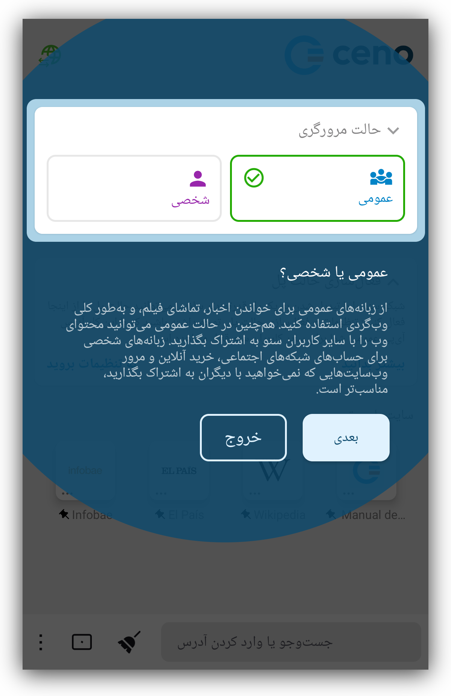

اولین اجرا
راهنمای گامبهگام
هنگامی که برای نخستین بار برنامه سنو را اجرا میکنید، به یک تور راهنمای گامبهگام و کوتاه از ویژگیهای اصلی سنو دعوت میشوید. میتوانید آن را بپذیرید (با زدن رو «شروع کنید») یا رد کنید (با لمس «صرفنظر از تور»)
این تور شما را همان طور که در تصاویر زیر نشان داده شده، یر با مهمترین ویژگیهای برنامه آشنا میکند.



مجوزها
در پایان تور از شما درخواست میشود تا برای عملکرد بهینه، مجوزهای لازم را به سنو بدهید:
وقتی روی «ادامه» بزنید، بسته به نسخه اندروید گوشیتان، لازم است مجوز ارسال اعلانها و غیرفعال کردن بهینهسازی باتری را به سنو بدهید. بعضی نسخههای اندروید هر دو را نیاز دارند و بعضی فقط مجوز غیرفعال کردن بهینهسازی باتری را میخواهند.
اعلانها
وقتی به سنو اجازه ارسال اعلان بدهید، برنامه آیکون سنو را در نوار اعلانها نمایش خواهد داد.

این آیکون هنگام دسترسی به نخستین وبسایت ظاهر خواهد شد.
این آیکون نشاندهنده سرویس مرورگر سنو است، یعنی آن بخشی از سنو که بهطور دائمی
اجرا میشود (حتی زمانی که مشغول مرور نیستید) و به دیگر کاربران سنو امکان میدهد
در هر زمانی محتوایی را از آن دریافت کنند. از آنجا که اجرای چنین سرویسی منابع
شبکه و پردازنده را مصرف میکند، ممکن است بخواهید هر زمان که در حال جابهجایی
هستید (مثلا وقتی به وایفای متصل نیستید یا از شارژر دورید) آن را متوقف کنید.
با زدن روی دکمه «توقف»، هم سنو و هم سرویس آن بهطور همزمان متوقف میشوند (تا
زمانی که دوباره سنو را باز کنید).

زدن روی دکمه «پاک کردن» یک اعلان کوچک دیگر باز میکند

زدن روی «بله» نهتنها دادههای ذخیرهشده در برنامه سنو روی دستگاه شما را حذف میکند، بلکه تمام تنظیمات سفارشی مانند موقعیت پیشفرض نوار آدرس، یا تم روشن، یا موارد دلخواه و سایر تنظیماتی را که انتخاب کردهاید نیز پاک خواهد کرد. اگر روی گزینه «بله» بزنید، سنو متوقف شده و همه دادههای آن بدون پرسش بیشتر حذف میشود و دستگاه شما عملا در وضعیتی قرار میگیرد که انگار هرگز از سنو استفاده نشده است.
هشدار: اندروید ممکن است جدا از دادههای یک برنامه، ردهای دیگری از استفاده از آن را هم مثلا در گزارش سیستمی نگه دارد
توقف بهینهسازی مصرف باتری

این گزینه معمولا در برنامههایی وجود دارد که نیاز دارند حتی زمانی که بهطور فعال استفاده نمیشوند در پسزمینه اجرا شوند، مانند برنامه سنو. در شرایط عادی، گوشی اندرویدی شما تلاش میکند مصرف باتری برنامههای مختلفی را که ممکن است روی دستگاهتان اجرا شوند بهینه کند. سیستمعامل گوشی این کار را برای طولانیتر کردن عمر باتری بین دو بار شارژ انجام میدهد. برای این منظور، گاهی برنامههایی را که در حال اجرا و مصرف باتری هستند اما بهطور فعال از آنها استفاده نمیکنید، متوقف میکند. وقتی به سنو اجازه میدهید که بهینهسازی مصرف باتری متوقف شود، احتمال کمتری هست که سیستمعامل گوشی شما برنامه سنو را موقعی که بهطور فعال از آن استفاده نمیکنید متوقف کند. اجازه دادن به اجرای برنامه سنو حتی در زمانی که فعالانه استفاده نمیشود، به کل شبکه همتابههمتای سنو کمک میکند بهتر کار کند و به درخواستهای کاربران بیشتری پاسخ دهد. با فعال کردن این گزینه، شما به همه کاربران در شبکه سنو کمک میکنید.